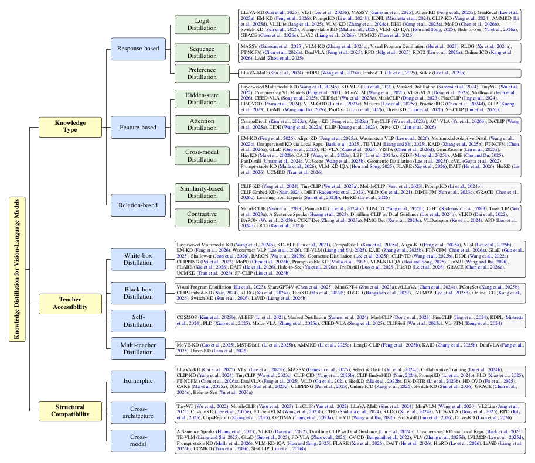
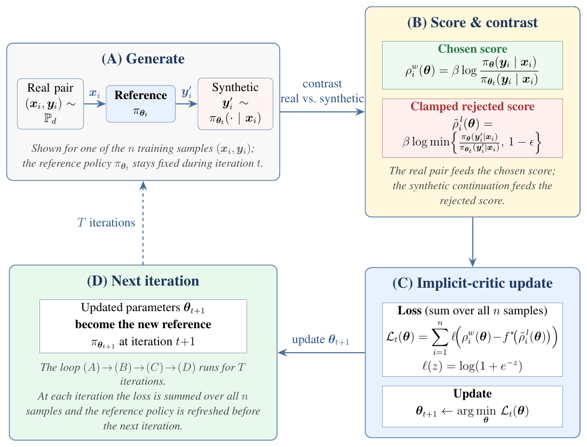
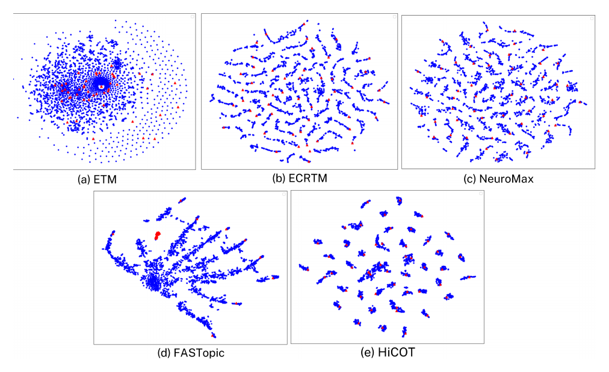

Hanoi University of Science and Technology (HUST)
B.S. in Computer Science, Talented Bachelor Program
GPA 3.71 / 4.0
Sep 2022 – 2026
Hanoi, Vietnam
Thank you for visiting. My name is Hoang Tran Vuong.
I am an AI Research Resident at Qualcomm AI Research and an AI Researcher at DreamAI Team. I earned my B.S. in Computer Science from the Talented Program at Hanoi University of Science and Technology, where I did research at the Data Science Laboratory under Dr. Ngo Van Linh.
My work is in machine learning and natural language processing. I currently focus on knowledge distillation, reinforcement learning, agentic AI, and human–AI alignment.
B.S. in Computer Science, Talented Bachelor Program
Sep 2022 – 2026
Hanoi, Vietnam
Math honors class
Aug 2019 – Jun 2022
Quang Ninh, Vietnam
Qualcomm AI Research
Mar 2026 – Present
DreamAI Team
Nov 2025 – Present
ZenAI
Mar 2025 – Feb 2026
Data Science Laboratory (DSLab), HUST
Jan 2024 – Nov 2025
Hanoi, Vietnam
Association Rencontres du Vietnam
Aug 2026
MB Bank
Dec 2024
Gold Medal, National Round
2022
Participant, 2020–2021 and 2021–2022
2020 – 2022
First Prize (2021–2022), Third Prize (2020–2021)
2020 – 2022

1. A Survey on Knowledge Distillation of Vision-Language Models.
Hoang Tran Vuong*, Dat Dao*, Pham Khanh Chi*, Minh-Phuc Truong*, Quyen Tran, Linh Ngo Van, Thien Huu Nguyen, Thanh-Toan Do, Trung Le
Findings of the Association for Computational Linguistics: EMNLP 2026.
paper
code

2. f-Divergence Self-Play for Tabular Anomaly Detection via Large Language Models.
Hoang Tran Vuong, Linh Ngo Van, Dang Nguyen, Thin Nguyen, Phuoc Nguyen, Mehrtash Harandi, Trung Le
International Conference on Machine Learning (ICML 2026).
paper
code

3. MCW-KD: Multi-Cost Wasserstein Knowledge Distillation for Large Language Models.
Hoang Tran Vuong, Tue Le, Quyen Tran, Linh Ngo Van, Trung Le
AAAI Conference on Artificial Intelligence (AAAI 2026).
paper
code

4. HiCOT: Improving Neural Topic Models via Optimal Transport and Contrastive Learning.
Hoang Tran Vuong*, Tue Le*, Tu Vu*, Tung Nguyen*, Linh Ngo Van, Sang Dinh, Thien Huu Nguyen
Findings of the Association for Computational Linguistics: ACL 2025.
paper
code
For a complete list, see the Publications page.